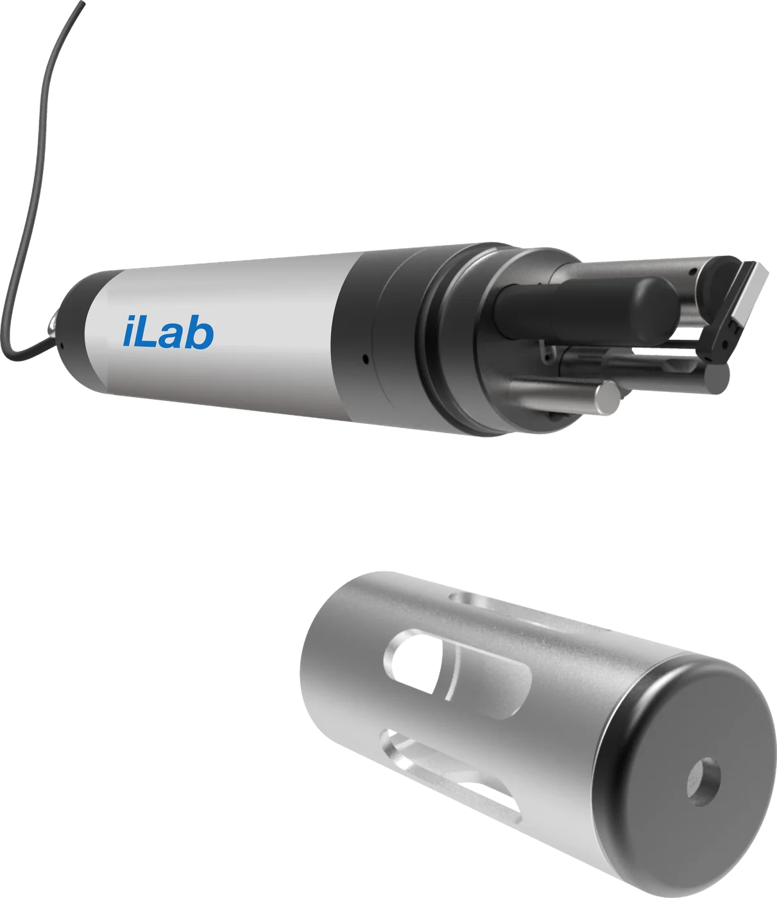

Multi-parameter water quality sonde
iLab 901
Up to seven water quality parameters at once, from one rugged sonde and its handheld.

The iLab 901 is a multi-parameter sonde for long-term water quality monitoring. Fit it with up to seven sensors, chosen from thirteen measurements, and it reads them all at once.
It cleans its own sensors, so the data stays accurate for longer. Set the sampling interval to suit, and the sonde makes the most of its batteries.
The handheld shows each reading on a 3.5 inch colour screen and stores more than 100,000 of them. GPS and USB are built in, and Bluetooth is an option.
Thirteen measurements. Fit up to seven.
Each iLab 901 is fitted with the sensors your program needs. Conductivity also gives salinity and total dissolved solids.
| Measurement | Method | Range | Resolution | Accuracy |
|---|---|---|---|---|
| Physical2 | ||||
| Temperature | Thermistor | 0 to 60 °C | 0.01 °C | ±0.5 °C |
| Depth | Pressure | 0 to 61 m | 2 cm | ±0.3% |
| Electrochemical3 | ||||
| pH | Glass electrode | 0 to 14 pH | 0.01 pH | ±0.1 pH |
| ORP | Glass electrode | −1000 to +1000 mV | 1 mV | ±5 mV |
| Conductivity | Platinum gauze electrode pair | 1 to 2000 µS/cm (K = 1) 100 µS/cm to 100 mS/cm (K = 10) | 0.1 µS/cm to 0.01 mS/cm, by range | ±3% |
| Optical4 | ||||
| Dissolved oxygen | Fluorescence | 0 to 20 mg/L (0 to 20 ppm) 0 to 200% | 0.01 mg/L 0.1% | ±3% or ±0.3 mg/L, whichever is greater |
| Turbidity | Light scattering | 0 to 1000 NTU | 0.1 NTU | ±5% or 0.3 NTU, whichever is greater |
| Chlorophyll | Fluorescence | 0 to 500 µg/L | 0.01 to 0.1 µg/L, by range | ±5% of the signal level of 1 ppb rhodamine B dye |
| Blue-green algae | Fluorescence | 200 to 300,000 cells/mL | 20 cells/mL | ±10% of the signal level of 1 ppb rhodamine B dye |
| Ion-selective4 | ||||
| Ammonia nitrogen | Ion-selective electrode | 0.1 to 1000 mg/L-N | 0.01 mg/L-N | ±5% or ±0.2 mg/L |
| Nitrate nitrogen | Ion-selective electrode | 0.5 to 1000 mg/L-N | 0.01 mg/L-N | ±10% or ±0.2 mg/L |
| Chloride | Ion-selective electrode | 3 to 1000 mg/L | 0.01 mg/L | ±10% or ±0.2 mg/L |
| Fluoride | Ion-selective electrode | 0.5 to 1000 mg/L | 0.01 mg/L | ±10% or ±0.2 mg/L |
- With an ion-selective sensor
The pH working range is 5 to 10 pH, and the sonde is rated to a depth of 10 m.
- Depth
The depth sensor reads to 61 m. The sonde itself is rated to 30 m.
- Temperature
The sonde measures in water from 0 to 40 °C, non-freezing.
Where it works.
Rivers, lakes and reservoirs
Online multi-parameter water quality monitoring.
Source water
Drinking water sources, groundwater and sea water.
Environmental monitoring
Long-term water quality records.
Agriculture
Water quality monitoring for agriculture.
Specifications
iLab 901 in detail.
Sonde
| Sensors | Up to 7 at once |
|---|---|
| Communication | Modbus, RS485 |
| Power supply | 9 to 36 V DC |
| Power draw | 3 W |
| Battery | 8 × 3.6 V lithium cells |
| Protection | IP68 |
| Depth rating | 30 m (10 m with an ion-selective sensor) |
| Measuring temperature | 0 to 40 °C, non-freezing |
| Storage temperature | 0 to 50 °C, non-freezing |
| Size | 90 mm diameter × 640.5 mm long |
| Weight | 3 kg |
Handheld
| Display | 3.5 inch colour screen, adjustable backlight |
|---|---|
| Data storage | More than 100,000 readings |
| Positioning | GPS receiver, built in |
| Interfaces | USB; Bluetooth optional |
| Power supply | 4 × 3.7 V rechargeable lithium, built in |
| Protection | IP67 |
| Material | ABS and polycarbonate |
| Operating temperature | 0 to 50 °C, non-freezing |
| Storage temperature | −15 to 60 °C |
| Size | 203 × 100 × 43 mm |
| Weight | 0.5 kg |
Measurements
| Fitted at once | Up to 7 |
|---|---|
| Physical | Temperature, depth |
| Electrochemical | pH, ORP, conductivity (with salinity and TDS) |
| Optical | Dissolved oxygen, turbidity, chlorophyll, blue-green algae |
| Ion-selective | Ammonia nitrogen, nitrate nitrogen, chloride, fluoride |
Specifications are subject to change without notice. Full details are in the iLab 901 datasheet.
Tell us what you need to measure.
Give us the water, the parameters and how long the sonde will be out. We’ll match the sensors to your site.